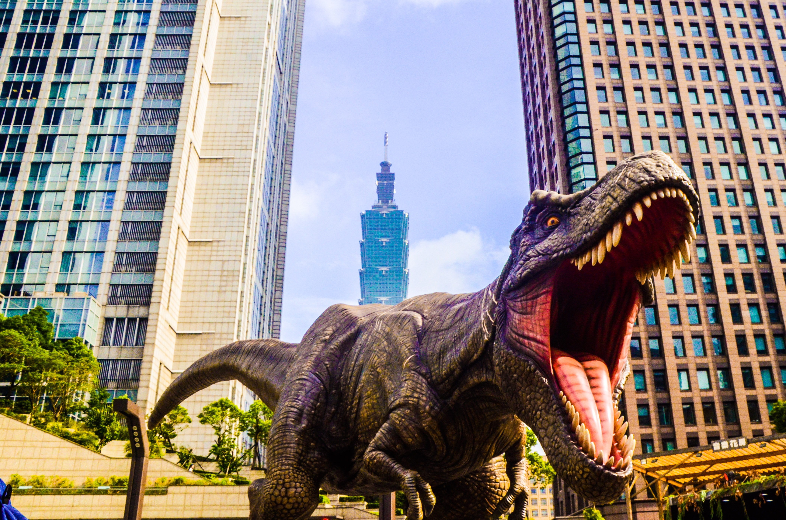

About Dinosaurs
Their history
Dinosaurs are a diverse group of reptiles of the clade Dinosauria.
They first appeared during the Triassic period, between 243 and 233.23 million years ago, although the exact origin and timing of the evolution of dinosaurs is the subject of active research.
They became the dominant terrestrial vertebrates after the Triassic–Jurassic extinction event 201 million years ago; their dominance continued through the Jurassic and Cretaceous periods. Reverse genetic engineering and the fossil record both demonstrate that birds are modern feathered dinosaurs, having evolved from earlier theropods during the late Jurassic Period.
As such, birds were the only dinosaur lineage to survive the Cretaceous–Paleogene extinction event 66 million years ago. Dinosaurs can therefore be divided into avian dinosaurs, or birds; and non-avian dinosaurs, which are all dinosaurs other than birds. This article deals primarily with non-avian dinosaurs.
People love dinosaurs!
Since the first dinosaur fossils were recognized in the early 19th century, mounted fossil dinosaur skeletons have been major attractions at museums around the world, and dinosaurs have become an enduring part of world culture.
The large sizes of some dinosaur groups, as well as their seemingly monstrous and fantastic nature, have ensured dinosaurs' regular appearance in best-selling books and films, such as Jurassic Park.
Persistent public enthusiasm for the animals has resulted in significant funding for dinosaur science, and new discoveries are regularly covered by the media.